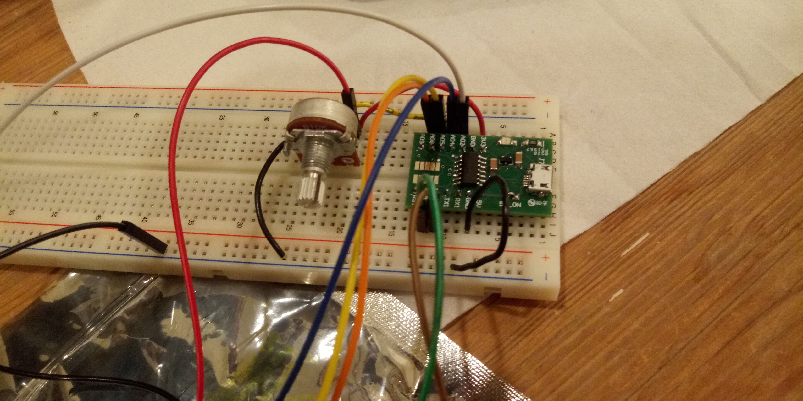

I began by trying to make the examples work. Since I don't have an ItsyBitsy, most of the codes required some tweaking.
Here is the I/O wire communication example:
And here is the potentiometer example: (I noticed I had some problems compiling when the UART wire was plugged in, particularily with the UNO. It was all solved when I unplugged)
Here is the radio example: it actually worked really well. I had my brother go outside and test how far the radius would work, and he made it all the way to the treeline from our house (about 30 feet), and I have my suspicions that he just got scared to enter the treeline in the dark and that it might have worked further.
I couldn't figure out a way to make the radio work both ways, so for my final project I tried to figure out a gamr that would only require one way communication. I thought of the game Mastermind, where one person sets up a sequence of 4 colors and the other player tries to guess what they are. I also had to switch to the Huzzah, since I didn't have enough ports to set up buttons and lights on the D11. The wiring for the radio is slightly different on the Huzzah, and some of the ports behave weirdly. I used the following site to figure out how to use it.
First, I hooked up the same potentiometer circuit to make sure that it worked, and it did! But then it stopped working when I tried to make my game...
I made a code that would allow the players to set their lights. Essentially, one button turns on and off and the next switched between lights. When you 'switch' three times, it submits your choice of light (you can't go backwards).
Here is the code for the player (the one who guesses):
/*
* Simple sketch for nRF24L01+ radios Receive side.
*
* Updated: Dec 2014 by TMRh20. Simplified Mar 2019 RMH.
*/
#include
#include
#include "RF24.h"
int switchPin = 2; // switch is connected to pin 2
int ledPin[] = {7,4}; // led on pin 13
int buttonPresses[] = {0,0}; // how many times the button has been pressed
int switchpress = 0;
int next = 3;
int index = 0;
int buzzerPin = 10;
int tempdata[] = {0,0};
Servo myservo;
/* Hardware configuration: Set up nRF24L01 radio on SPI bus plus pins 7 & 8 */
RF24 radio(5,6);
byte addresses[][6] = {"1Node","2Node"};
int angle;
void setup() {
pinMode(buzzerPin, OUTPUT);
pinMode(switchPin, INPUT); // Set the switch pin as input
pinMode(ledPin[0], OUTPUT);
pinMode(ledPin[1], OUTPUT);
pinMode(next, INPUT); // Set the switch pin as input
digitalWrite(switchPin, HIGH); // set pullup resistor
digitalWrite(next, HIGH);
myservo.attach(9);
Serial.begin(0);
Serial.println(F("RF24example: simple receive"));
radio.begin();
// Set the PA Level low to prevent power supply related issues since this is a
// getting_started sketch, and the likelihood of close proximity of the devices. RF24_PA_MAX is default.
radio.setPALevel(RF24_PA_LOW);
radio.openWritingPipe(addresses[1]);
radio.openReadingPipe(1,addresses[0]);
// Start the radio listening for data
radio.startListening();
}
void loop() {
Serial.println("test");
byte rec_data;
Serial.println(radio.available());
if (switchpress < 2){
if (digitalRead(next) == LOW) // check if button was pressed
{
switchpress++; // increment buttonPresses count
delay(2100); // debounce switch
Serial.print("numer of times you switched ");
Serial.println(switchpress);
}
if (digitalRead(switchPin) == LOW) // check if button was pressed
{
buttonPresses[switchpress]++; // increment buttonPresses count
delay(2100); // debounce switch
Serial.print("numer of times you pressed the button ");
Serial.println(buttonPresses[0]);
Serial.println(buttonPresses[1]);
}
if (buttonPresses[switchpress] % 2 == 0) digitalWrite(ledPin[switchpress], LOW); // rollover every fourth press
if (buttonPresses[switchpress] % 2 == 1) digitalWrite(ledPin[switchpress], HIGH); // rollover every fourth press
}
if( radio.available()){
// Variable for the received timestamp
while (radio.available()) { // While there is data ready
radio.read( &rec_data, 1 ); // Get the payload
}
Serial.print("received ");
//Serial.println(rec_data);
tempdata[0] = buttonPresses[0] % 2;
tempdata[1] = buttonPresses[1] % 2;
if (rec_data == tempdata){
tone(buzzerPin, 1000, 1000);
delay(1000);
}
//angle = map(rec_data, 0, 255, 0, 180);
//myservo.write(angle);
//Serial.println(rec_data);
}
} // Loop
This is the code for the transmitter (the one who initializes the game):
/*
* Simple sketch for nRF24L01+ radios. Transmit side.
*
*Specifically for use with ATSAMD11C14 board using
*
* CE: pin 8
* CSN os SS: pin 15
* Updated: Dec 2014 by TMRh20. Simplified Mar 2019 RMH.
*/
int switchPin = 33; // switch is connected to pin 2
int ledPin[] = {14,32}; // led on pin 13
int buttonPresses[] = {0,0}; // how many times the button has been pressed
int switchpress = 0;
int next = 25;
#include
#include "RF24.h"
/* Hardware configuration: Set up nRF24L01 radio on SPI bus plus CE and CS */
RF24 radio(8,15); //CE and CS pins. This is the change needed when you change to another board.
byte addresses[][6] = {"1Node","2Node"};
byte data[] = {0,0};
void setup() {
// Serial.begin(0);
// Serial.println("RF24example: Simple tx");
pinMode(switchPin, INPUT); // Set the switch pin as input
pinMode(ledPin[0], OUTPUT);
pinMode(ledPin[1], OUTPUT);
pinMode(next, INPUT); // Set the switch pin as input
//digitalWrite(switchPin, HIGH); // set pullup resistor
//digitalWrite(next, HIGH);
Serial.begin(9600);
radio.begin();
// Set the PA Level low to prevent power supply related issues since this is a
// getting_started sketch, and the likelihood of close proximity of the devices. RF24_PA_MAX is default.
radio.setPALevel(RF24_PA_LOW);
// Open a writing and reading pipe on each radio, with opposite addresses
radio.openWritingPipe(addresses[0]);
radio.openReadingPipe(1,addresses[1]);
}
void loop() {
//Serial.println("Now sending");
if (switchpress < 3){
if (digitalRead(next) == HIGH) // check if button was pressed
{
switchpress++; // increment buttonPresses count
delay(1000); // debounce switch
Serial.print("numer of times you switched ");
Serial.println(switchpress);
}
if (digitalRead(switchPin) == HIGH) // check if button was pressed
{
buttonPresses[switchpress]++; // increment buttonPresses count
delay(1000); // debounce switch
Serial.print("numer of times you pressed the button ");
Serial.println(buttonPresses[0]);
Serial.println(buttonPresses[1]);
}
if (buttonPresses[switchpress] % 2 == 0) digitalWrite(ledPin[switchpress], LOW); // rollover every fourth press
if (buttonPresses[switchpress] % 2 == 1) digitalWrite(ledPin[switchpress], HIGH); // rollover every fourth press
}
if (switchpress > 2):{
if (!radio.write( &data, 1 )){
// Serial.println(F("failed"));
}
data[0] = buttonPresses[0] % 2;
data[1] = buttonPresses[1] % 2;
radio.write(data);
Serial.print("Sent ");
Serial.println(data[0]);
Serial.println(data[0]);
}
delay(100);
} // loop end
Here are all of my code snippets, most are configured for the UNO and the D11, except fort the final project stuff which is with the Huzzah (Adafruit Feather 32). Download